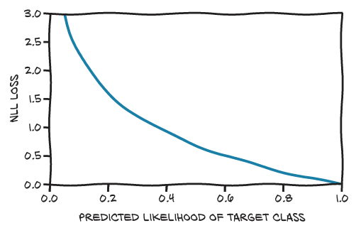

%matplotlib inline
from matplotlib import pyplot as plt
import numpy as np
import torch
torch.set_printoptions(edgeitems=2, linewidth=75)
torch.manual_seed(123)<torch._C.Generator at 0x7f5a96e14210>%matplotlib inline
from matplotlib import pyplot as plt
import numpy as np
import torch
torch.set_printoptions(edgeitems=2, linewidth=75)
torch.manual_seed(123)<torch._C.Generator at 0x7f5a96e14210>class_names = ['airplane','automobile','bird','cat','deer',
'dog','frog','horse','ship','truck']
fig = plt.figure(figsize=(8,3))
num_classes = 10
for i in range(num_classes):
ax = fig.add_subplot(2, 5, 1 + i, xticks=[], yticks=[])
ax.set_title(class_names[i])
img = next(img for img, label in cifar10 if label == i)
plt.imshow(img)
plt.show()
img, label = cifar10[99]
img, label, class_names[label](<PIL.Image.Image image mode=RGB size=32x32>, 1, 'automobile')plt.imshow(img)
plt.show()
from torchvision import datasets
data_path = '../data-unversioned/p1ch7/'
cifar10 = datasets.CIFAR10(data_path, train=True, download=True)
cifar10_val = datasets.CIFAR10(data_path, train=False, download=True)/root/anaconda3/envs/py310/lib/python3.10/site-packages/torchvision/io/image.py:13: UserWarning: Failed to load image Python extension: '/root/anaconda3/envs/py310/lib/python3.10/site-packages/torchvision/image.so: undefined symbol: _ZN5torch3jit17parseSchemaOrNameERKSs'If you don't plan on using image functionality from `torchvision.io`, you can ignore this warning. Otherwise, there might be something wrong with your environment. Did you have `libjpeg` or `libpng` installed before building `torchvision` from source?
warn(Files already downloaded and verified
Files already downloaded and verified넘파이 배열과 PIL 이미지를 텐서로 바꾸는 역할을 한다.
from torchvision import transforms
to_tensor = transforms.ToTensor()
img_t = to_tensor(img)
img_t.shapetorch.Size([3, 32, 32])처음부터 변환 자체를 datasets.CIFAR10의 인자로 전달하는 것도 가능
tensor_cifar10 = datasets.CIFAR10(data_path, train=True, download=False,
transform=transforms.ToTensor())img_t, _ = tensor_cifar10[99]
type(img_t),img_t.shape,img_t.dtype(torch.Tensor, torch.Size([3, 32, 32]), torch.float32)img_t.min(), img_t.max()(tensor(0.), tensor(1.))# 이미지 동일한지 확인
plt.imshow(img_t.permute(1, 2, 0)) # C X H X W를 H X W X C로 바꿔준다(4.1.3 레이아웃 변경하기)
plt.show()
모든 채널이 평균값 0과 단위 표준편차를 가지도록 데이터셋의 각 채널의 평균과 표준편차를 계산: $ v_n[c] = (v[c] - mean[c]) / sedev[c] $
# 추가 차원을 만들어 데이터셋이 반환하는 모든 텐서 쌓기
imgs = torch.stack([img_t for img_t, _ in tensor_cifar10], dim=3)
imgs.shapetorch.Size([3, 32, 32, 50000])# 평균과 표준편차 계산
imgs.view(3, -1).mean(dim=1),imgs.view(3, -1).std(dim=1)(tensor([0.4914, 0.4822, 0.4465]), tensor([0.2470, 0.2435, 0.2616]))# Normalize 변환 초기화
transforms.Normalize((0.4914, 0.4822, 0.4465), (0.2470, 0.2435, 0.2616))Normalize(mean=(0.4914, 0.4822, 0.4465), std=(0.247, 0.2435, 0.2616))# ToTensor 변환에 이어 붙이기
transformed_cifar10 = datasets.CIFAR10(
data_path, train=True, download=False,
transform=transforms.Compose([
transforms.ToTensor(),
transforms.Normalize((0.4914, 0.4822, 0.4465),
(0.2470, 0.2435, 0.2616))
]))img_t, _ = transformed_cifar10[99]
plt.imshow(img_t.permute(1, 2, 0))
plt.show()Clipping input data to the valid range for imshow with RGB data ([0..1] for floats or [0..255] for integers).
img_ttensor([[[-1.0051, -1.1956, ..., 0.9160, 0.1856],
[-0.9892, -1.1163, ..., 0.7255, 0.3127],
...,
[ 0.9160, 0.3920, ..., 0.1539, 0.2809],
[ 1.3288, 0.9001, ..., 0.0745, 0.6937]],
[[-0.9496, -1.1750, ..., 0.9830, 0.2100],
[-0.9335, -1.1267, ..., 0.8220, 0.3710],
...,
[ 0.3710, -0.0799, ..., -0.0799, 0.0328],
[ 0.8220, 0.4516, ..., -0.0638, 0.5321]],
[[-1.0472, -1.3170, ..., -0.5675, -0.6275],
[-1.1521, -1.3170, ..., -0.5825, -0.5525],
...,
[ 0.0471, -0.2827, ..., -0.2377, -0.0578],
[ 0.4519, 0.1371, ..., -0.0428, 0.6917]]])cifar10 = datasets.CIFAR10(
data_path, train=True, download=False,
transform=transforms.Compose([
transforms.ToTensor(),
transforms.Normalize((0.4914, 0.4822, 0.4465),
(0.2470, 0.2435, 0.2616))
]))
cifar10_val = datasets.CIFAR10(
data_path, train=False, download=False,
transform=transforms.Compose([
transforms.ToTensor(),
transforms.Normalize((0.4914, 0.4822, 0.4465),
(0.2470, 0.2435, 0.2616))
]))label_map = {0: 0, 2: 1} # 기존 레이블 0(비행기)를 0으로,2(새)를 1로
class_names = ['airplane', 'bird']
cifar2 = [(img, label_map[label])
for img, label in cifar10
if label in [0, 2]]
cifar2_val = [(img, label_map[label])
for img, label in cifar10_val
if label in [0, 2]]초기에서는 구조적인 관계를 모르기 때문에 관계에 집중하지 않음! ex) 176 208 피처
- 소프트맥스 - 벡터값을 받아 동일한 차원의 다른 벡터를 만드는데, 값이 확률로 표현되어야 하는 제약을 만족한다.
# 소프트맥스 코드
def softmax(x):
return torch.exp(x) / torch.exp(x).sum()x = torch.tensor([1.0, 2.0, 3.0])
softmax(x),softmax(x).sum()(tensor([0.0900, 0.2447, 0.6652]), tensor(1.))import torch
import torch.nn as nn
import torch.optim as optim
softmax = nn.Softmax(dim=1)
# 지수끼리 더하고 빼기에 출력들의 간격이 같으면 같은 확률
x = torch.tensor([[4.0, 5.0, 6.0],
[1.0, 2.0, 3.0]])
softmax(x)tensor([[0.0900, 0.2447, 0.6652],
[0.0900, 0.2447, 0.6652]])# 모델 설정 활성함수 tanh
import torch.nn as nn
model = nn.Sequential(
nn.Linear(3072,512), # 임의로 512개의 은닉된 피처 선택
nn.Tanh(),
nn.Linear(512,2),
nn.Softmax(dim=1)) # 확률값으로 표현# 새
img, _ = cifar2[0]
plt.imshow(img.permute(1, 2, 0))
plt.show()Clipping input data to the valid range for imshow with RGB data ([0..1] for floats or [0..255] for integers).img.view(-1) #view는 1차원벡터로 만들어주는 코드
len(img.view(-1))3072img_batch = img.view(-1).unsqueeze(0) # 차원을 0차원으로 만들기
len(img_batch)1out = model(img_batch)
outtensor([[0.4784, 0.5216]], grad_fn=<SoftmaxBackward0>)# 출력값이 의미하는 인덱스 출력 (새 또는 비행기)
_, index = torch.max(out, dim=1)
indextensor([1])정확하게 0.0이나 1.0이 아닌 모든 경우를 애써가며 벌점을 주는 대신 분류가 어긋나는 경우에 벌점을 주고 싶다.
- NLL(Negative Log Likelihood) : 위와 같은 식으로 동작하는 손실 함수
\[ NLL = -sum(log(out_i[c_i])) \]

import torch
import torch.nn as nn
import torch.optim as optimloss = nn.NLLLoss()img, label = cifar2[1]
out = model(img.view(-1).unsqueeze(0))
loss(out, torch.tensor([label]))tensor(-0.4953, grad_fn=<NllLossBackward0>)outtensor([[0.5158, 0.4842]], grad_fn=<SoftmaxBackward0>)img, label = cifar2[0]
out = model(img.view(-1).unsqueeze(0))
out,torch.tensor([label])(tensor([[-2.0171, -0.1428]], grad_fn=<LogSoftmaxBackward0>), tensor([1]))img.view(-1).unsqueeze(0)tensor([[ 0.6143, -0.3224, ..., -1.3170, -1.0472]])import torch
import torch.nn as nn
import torch.optim as optim
model = nn.Sequential(
nn.Linear(3072, 512),
nn.Tanh(),
nn.Linear(512, 2),
nn.LogSoftmax(dim=1))
learning_rate = 1e-2
optimizer = optim.SGD(model.parameters(), lr=learning_rate) # 경사하강법
loss_fn = nn.NLLLoss() # NLL 손실 함수
n_epochs = 3for epoch in range(n_epochs):
for img, label in cifar2:
out = model(img.view(-1).unsqueeze(0)) # 1차원 벡터 형식 만들기
loss = loss_fn(out, torch.tensor([label])) # 정답도 확인
optimizer.zero_grad()
loss.backward()
optimizer.step()
print("Epoch: %d, Loss: %f" % (epoch, float(loss)))위 코드 실행시 상당히 오랜 시간이 걸린다, 그나마 아래 코드는 덜 오래 걸린다, 이건 공대 연구실 로컬 컴퓨터에서 실행하는게 좋다!
import torch
import torch.nn as nn
import torch.optim as optim
model = nn.Sequential(
nn.Linear(3072, 512),
nn.Tanh(),
nn.Linear(512, 2),
nn.LogSoftmax(dim=1)
)
learning_rate = 1e-2
optimizer = optim.SGD(model.parameters(), lr=learning_rate)
loss_fn = nn.NLLLoss()
n_epochs = 100
for epoch in range(n_epochs):
for img, label in cifar2:
img = to_tensor(img)
out = model(img.view(-1).unsqueeze(0))
loss = loss_fn(out, torch.tensor([label]))
optimizer.zero_grad()
loss.backward()
optimizer.step()
print('Epoch: %d, Loss: %f' % (epoch, float(loss)))